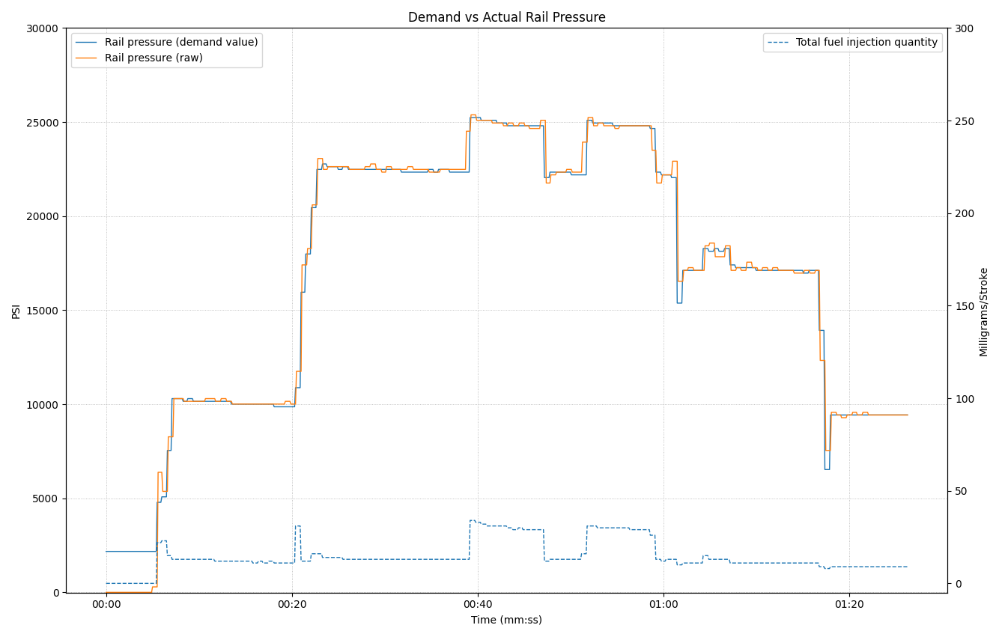

Rail Pressure Chart
The Rail Pressure quick chart displays both actual (raw) and demanded rail pressure throughout the snapshot. This chart is essential for diagnosing fuel system performance and identifying pressure control issues.

Understanding Rail Pressure
Actual (Raw) Rail Pressure
This is the measured fuel pressure in the common rail, as reported by the rail pressure sensor. It represents the real-time pressure available for fuel injection.
Demanded Rail Pressure
This is the target fuel pressure calculated by the ECU based on engine operating conditions such as speed, load, and temperature. The ECU adjusts the fuel pump to achieve this target pressure.
Critical Pressure Thresholds
Important for Bobcat V1 Engines: Rail pressure must reach 1450 psi before fuel delivery begins.
Additionally, the difference between actual (raw) and demanded rail pressure must be within 2176 psi for proper operation.
Normal Operating Range
- Idle - Typically 3,000 - 5,000 psi
- Under Load - Can reach 20,000+ psi depending on demand
- Cranking - Must reach at least 1450 psi for fuel delivery to start
Analyzing Rail Pressure During Steady State
Rail pressure performance should be evaluated while the engine is in a steady state condition. This means analyzing periods where operating conditions are stable and consistent.
Why Steady State Matters
When fuel delivery is changing rapidly (such as during acceleration or deceleration), both actual and demanded rail pressure will fluctuate as the system responds to changing load conditions. These transient periods make it difficult to assess the fuel system's ability to maintain proper pressure control.
How to Identify Steady State
Look for periods in the chart where Total Fuel Delivery is not changing. During these periods:
- Engine speed should be relatively constant
- Load should be stable
- Total fuel delivery should show a flat or consistent pattern
- Both actual and demanded rail pressure should track closely together
Identifying Problems
Use the chart to spot these common fuel system issues:
- Large gap between actual and demanded - Fuel supply, IMV or high pressure pump issue, injectors leaking or blocked
- Actual pressure above demanded during steady state - IMV or IMV circuit, blocked injector(s) issue
Tips
- Use the Vertical Cursor to compare actual vs. demanded pressure at specific points
- Use the Values tool to see exact pressure readings and calculate the difference
- Zoom into steady-state periods for detailed pressure control analysis
- Compare rail pressure with total fuel delivery to identify steady-state operating periods